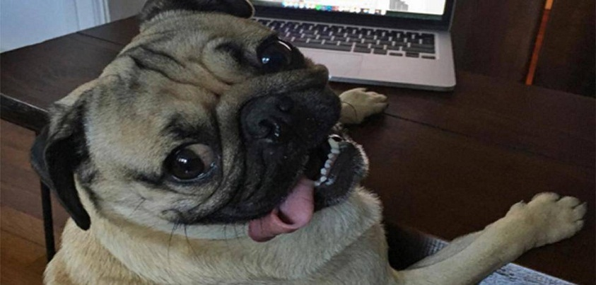
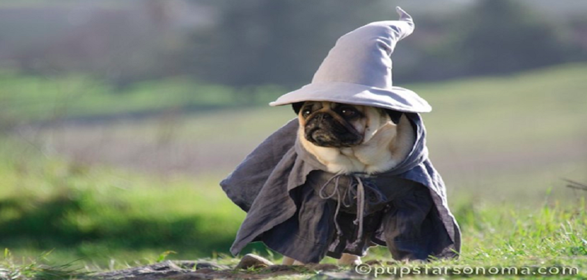
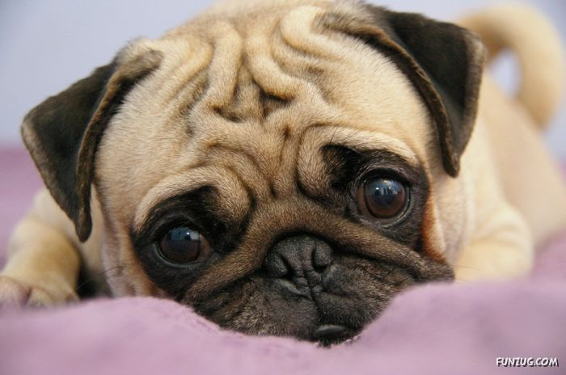
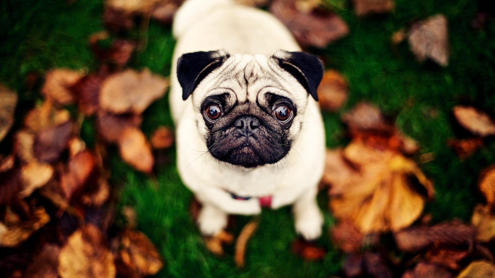
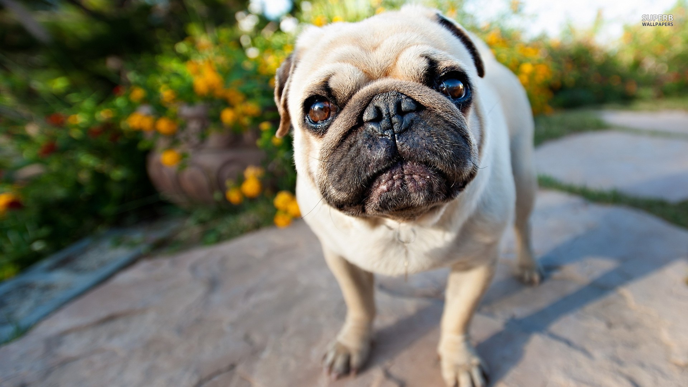
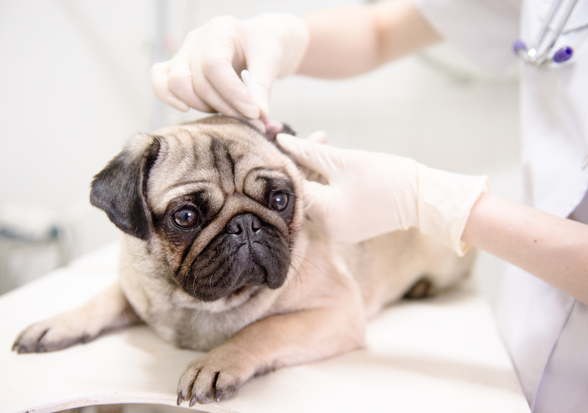
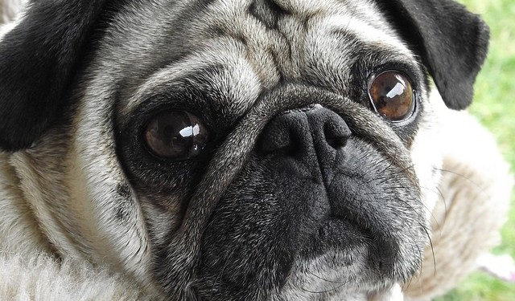
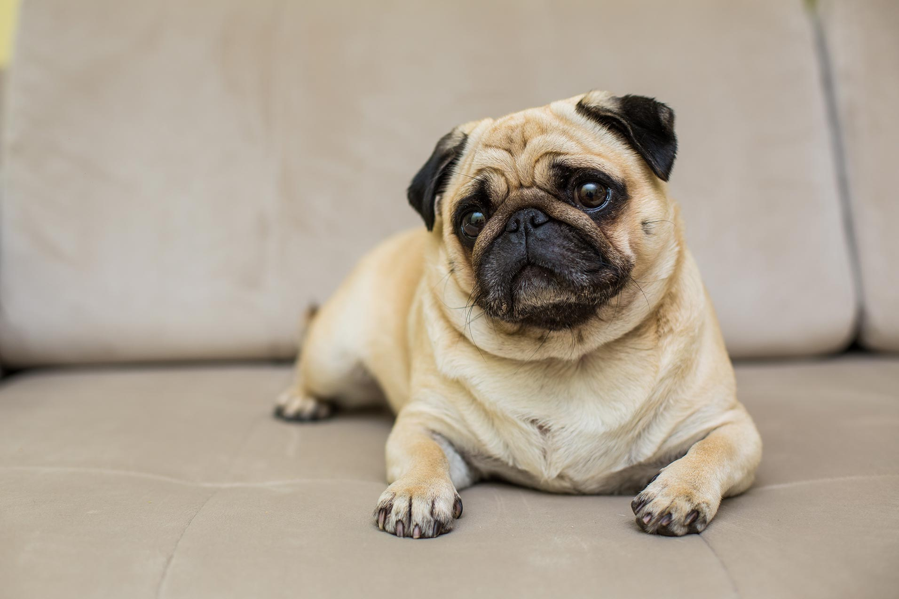

Pug Infomation

There is nothing truer in this world than the love of a good dog.
—Mira Grant

The Pug's comical face, with deep wrinkles around big, dark eyes and a flat round face, can't help but make you smile. It is believed that the Pug's name comes from the Latin word for "fist" because his face resembles a human fist.
Pugs are clowns at heart, but they carry themselves with dignity. Pugs are playful dogs, ready and able for games, but they are also lovers, and must be close to their humans. Pugs love to be the center of attention, and are heartsick if ignored.
Pugs are square and thickset, usually weighing no more than 20 pounds. Their heads are large and round, with large, round eyes. They have deep and distinct wrinkles on their faces. Legend has it that the Chinese, who mastered the breeding of this dog, prized these wrinkles because they resembled good luck symbols in their language. Especially prized were dogs with wrinkles that seemed to form the letters for the word "prince" in Chinese.
The moles on a Pug's cheeks are called "beauty spots." His muzzle or mask is black, with a clearly defined "thumb mark" on the forehead and a black trace down the center of the back. His ears are smooth, black and velvety. He has a characteristic undershot jaw (the lower teeth extend slightly beyond the upper teeth) and a tightly curled tail.
Highlights
- Pugs can be stubborn and difficult to housebreak. Crate training is recommended.
- Despite their short coats, Pugs shed a lot.
- Pugs wheeze, snort and snore, loudly.
- Because their eyes are so prominent, Pugs are prone to eye injuries.
- Pugs are greedy eaters and will overeat if given the chance. Since they gain weight easily, they can quickly become obese if food intake isn't monitored carefully.
- To get a healthy dog, never buy a puppy from an irresponsible breeder, puppy mill, or pet store. Look for a reputable breeder who tests her breeding dogs to make sure they're free of genetic diseases that they might pass onto the puppies, and that they have sound temperaments.

Pug Dog Colors
Black
Fawn
Apricot
Silver Fawn
Personality

Don't expect a Pug to hunt, guard or retrieve. Pugs were bred to be companions, and that's exactly what they do best. The Pug craves affection — and your lap — and is very unhappy if his devotion isn't reciprocated.
He tends to be a sedentary dog, content to sit in your lap as you read a book or watch a movie. This doesn't mean the Pug is a stick-in-the-mud. He is a playful, comical dog that enjoys living it up, and delights his owner with silly antics.
Like every dog, the Pug needs early socialization — exposure to many different people, sights, sounds, and experiences — when they're young. Socialization helps ensure that your Pug puppy grows up to be a well-rounded dog.
Health
Pugs are generally healthy, but like all breeds, they're prone to certain health conditions. Not all Pugs will get any or all of these diseases, but it's important to be aware of them if you're considering this breed.
Pugs are prone to the following diseases:
- Cheyletiella Dermatitis (Walking Dandruff): This is a skin condition that is caused by a small mite.The mites that cause this condition are contagious, which means all pets in the household need to treated.
- Pug Dog Encephalitis: PDE is a fatal inflammatory brain disease that is unique to Pugs. Medical researchers don't know why Pugs develop this condition; there is no way test for it or to treat it. A diagnosis of PDE can only be made by testing the brain tissue of the dog after it dies. PDE usually affects young dogs, causing them to seizure, circle, become blind, then fall into a coma and die. This can happen in a few days or weeks.
- Epilepsy: PDE isn't the only thing that can cause Pugs to seizure. They are prone to a condition called idiopathic epilepsy: seizures for no known reason.
- Nerve Degeneration: Older Pugs that drag their rear, stagger, have trouble jumping up or down, or become incontinent may be suffering from nerve degeneration. Pugs affected with this condition don't appear to be in pain and the condition usually advances slowly.
- Corneal Ulcers: Because his eyes are so large and prominent, the Pug's eyes can be injured easily or develop ulcers on the cornea (the clear part of the eye). Corneal ulcers usually respond well to medication, but if left untreated, can cause blindness or even rupture the eye.
- Dry Eye: Keratoconjunctivitis sicca and pigmentary keratitis are two conditions seen in Pugs. They can occur at the same time, or individually. Dry eye is caused when the eyes don't produce enough tears to stay moist. Pigmentary keratits is a condition that causes black spots on the cornea, especially in the corner near the nose. If the pigment covers the eye, it can cause blindness. Both of these eye conditions require life-long therapy and care.
- Eye Problems: Because their large eyes bulge, Pugs are prone to a variety of eye problems, including proptosis (the eyeball is dislodged from the eye socket and the eyelid clamps behind it); distichiasis (an abnormal growth of eyelashes on the margin of the eye, resulting in the eyelashes rubbing against the eye); progressive retinal atrophy (a degenerative disease of the retinal visual cells that leads to blindness); and entropion (the eyelid, usually the lower lid, rolls inward, causing the hair on the lid to rub on the eye and irritate it).
- Allergies: Some Pugs suffer from a variety of allergies, ranging from contact to food allergies. If your Pug is licking at his paws or rubbing his face a great deal, suspect allergy and have him checked by your vet.
- Demodectic Mange: Also called demodicosis, all dogs carry a little passenger called a demodex mite. The mother dog passes this mite to her pups in their first few days of life. The mite can't be passed to humans or other dogs; only the mother passes mites to her pups. Demodex mites live in hair follicles and usually don't cause any problems. If your Pug has a weakened or compromised immune system, however, it can develop demodectic mange. Demodectic mange can be localized or generalized. In the localized form, patches of red, scaly, skin with hair loss appears on the head, neck and forelegs. It's thought of as a puppy disease, and often clears up on its own. Even so, you should take your dog to the vet because it can turn into the generalized form of demodectic mange. Generalized demodectic mange covers the entire body and affects older puppies and young adult dogs. The dog develops patchy skin, bald spots, and skin infections all over the body.
- Staph Infection: Staph bacteria is commonly found on skin, but some dogs will develop pimples and infected hair follicles if their immune systems are stressed. The lesions can look like hives where there is hair; on areas without hair, the lesions can look like ringworm. You should contact your vet for appropriate treatment.
- Yeast Infection: If your Pug smells bad, is itchy and has blackened, thickened skin, he may have a yeast infection. It commonly affects the armpits, feet, groin, neck, and inside the ears. Your vet can prescribe medications to clear this up.
- Hemi-vertebrae: Short-nosed breeds, such as Pugs, Bulldogs and French Bulldogs, can have misshaped vertebrae. Sometimes, only a few of the vertebrae are affected and the dog is able to live a normal life. Others will stagger and display an uncoordinated, weak gait between 4 and 6 months of age. Some dogs get progressively worse and may even become paralyzed. The cause of the condition is unknown. Surgery can help.
- Hip Dysplasia: This malady affects small breeds as well as large breeds, including Pugs. Many factors, including genetics, environment and diet, are thought to contribute to this deformity of the hip joint. Affected Pugs are usually able to lead normal, healthy lives with proper veterinary attention.
- Legg-Perthes Disease: This is another disease involving the hip joint. Many toy breeds are prone to this condition. When your Pug has Legg-Perthes, the blood supply to the head of the femur (the large rear leg bone) is decreased, and the head of the femur that connects to the pelvis begins to disintegrate. Usually, the first signs of Legg-Perthes, limping and atrophy of the leg muscle, occur when puppies are 4 to 6 months old. The condition can be corrected with surgery to cut off the diseased femur so that it isn't attached to the pelvis any longer. The scar tissue that results from the surgery creates a false joint and the puppy is usually pain free.
- Patellar Luxation: The patella is the kneecap. Luxation means dislocation of an anatomical part (as a bone at a joint). Patellar luxation is when the knee joint (often of a hind leg) slides in and out of place, causing pain. This can be crippling, but many dogs lead relatively normal lives with this condition.
- Vaccination Sensitivity: There are reports of Pugs suffering from sensitivity to routine vaccinations. Usually, symptoms include hives, facial swelling, soreness and lethargy. A dog that is sensitive to vaccines can develop complications or die, though this is rare. Watch your Pug carefully for a few hours after being vaccinated and call the vet if you notice anything unusual.





